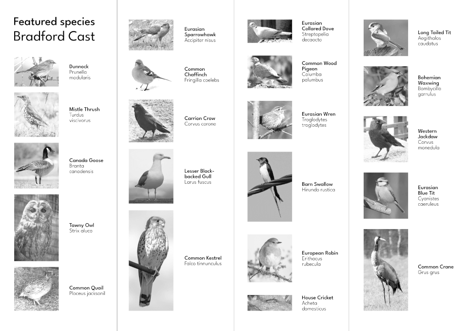
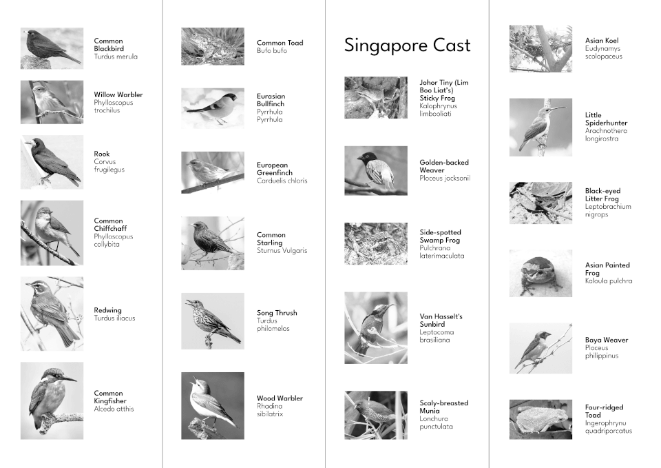

#^------------------------------
#^title trim=ends
LAGU MADU - DENGAR MANIS YA - shi Blank
#^------------------------------
#^body trim=ends

{bd}

{sg}
{no}
{cc}
{im}
Back
#^bd trim=ends form=markdown
**Bradford Cast**
bd1 - Soprano Pipistrelle - Pipistrellus pygmaeus
bd2 - Common Kingfisher - Alcedo atthis
bd3 - Redwing - Turdus iliacus
bd4 - Redwing - Turdus iliacus
bd5 - Song Thrush - Turdus philomelos
bd6 - Wood Warbler - Phylloscopus sibilatrix
bd7 - Peregrine Falcon - Falco peregrinus
bd8 - Common Frog - Rana temporaria
bd9 - Common Blackbird - Turdus merula
bd10 - Tawny Owl - Strix aluco
bd11 - Common Quail - Coturnix coturnix
bd12 - House cricket - Acheta domesticus
bd13 - Song Thrush - Turdus philomelos
bd14 - Rook - Corvus frugilegus
bd15 - Identity Unknown
bd16 - Common Frog - Rana temporaria
bd17 - Mistle Thrush - Turdus viscivorus viscivorus
bd18 - Song Thrush - Turdus philomelos philomelos
bd19 - Common Kestrel - Falco tinnunculus tinnunculus
bd20 - Eurasian Curlew - Numenius arquata arquata
bd21 - Lesser Black-backed Gull - Larus fuscus graellsii
bd22 - Common Chaffinch - Fringilla coelebs gengleri
bd23 - Tawny Owl - Strix aluco aluco
bd24 - Red Kite - Milvus milvus
bd25 - Carrion Crow - Corvus corone corone
bd26 - Dunnock - Prunella modularis occidentalis
bd27 - Eurasian Wren - Troglodytes troglodytes indigenus
bd28 - Eurasian Collared Dove - Streptopelia decaocto
bd29 - Canada Goose - Branta canadensis
bd30 - Common Wood Pigeon - Columba palumbus
bd31 - Common Crane - Grus grus
bd32 - Eurasian Blue Tit - Cyanistes caeruleus
bd33 - Common Toad - Bufo bufo
bd34 - Western Jackdaw - Coloeus monedula
bd35 - Long-tailed Tit - Aegithalos caudatus rosaceus
bd36 - Willow Warbler - Phylloscopus trochilus
bd37 - Eurasian Bullfinch - Pyrrhula pyrrhula
bd38 - European Greenfinch - Chloris chloris
bd39 - Common Starling - Sturnus vulgaris
bd40 - Barn Swallow - Hirundo rustica
bd41 - Common Chiffchaff - Phylloscopus collybita
bd42 - House Sparrow - Passer domesticus domesticus
bd43 - European Robin - Erithacus rubecula
bd44 - Common Swift - Apus apus
bd45 - Bohemian Waxwing - Bombycilla garrulus
#^sg trim=ends form=markdown
**Singapore Cast**
sg1 - Ingerophrynus quadriporcatus
sg2 - Hylarana laterimaculata
sg3 - Johor Tiny Sticky Frog - Kalophrynus limbooliati
sg4 - Leptobrachium nigrops
sg5 - Asian Painted Frog - Kaloula pulchra
sg6 - Singapore Botanical Gardens
sg7 - Asian Koel
sg9 - Little Spiderhunter - Arachnothera longirostra longirostra
sg10 - Scaly-breasted Munia - Lonchura punctulata
sg11 - Van Hasselt's Sunbird - Leptocoma brasiliana
sg12 - Baya Weaver - Ploceus philippinus
sg13 - Golden-backed Weaver - Ploceus jacksoni
#^no trim=ends form=markdown
**Field Recordings**
no1, no13 - Wetherspoons 12 July 2023
no2, no9, no15 - Oastler Market 24 Feb 2023
no3, no11 - Northgate Bistro 4 Aug 2023
no4, no8 - Kirkgate Market
no5, no14 - Baxandalls Cafe 7 August 2023
no6, no10, no16 - Atheneum Cafe 8 Aug 2023
no7, no12 - Waves against shore in Singapore
#^im trim=ends form=markdown
**Citation Images**
“Mehlschwalbe Delichon urbicum.jpg” by Andreas Trepte, www.avi-fauna.info.
https://commons.wikimedia.org/wiki/File:Mehlschwalbe_Delichon_urbicum.jpg. CC BY-NC-SA 2.5
“Rotmilan blickt über die Schulter.jpg” by Michael Graf.
https://commons.wikimedia.org/wiki/File:Rotmilan_blickt_%C3%BCber_die_Schulter.jpg. CC BY-SA 4.0
“Ring ouzel, Turdus torquatus, Ringtrast [Explored 2023-10-21]” by Blondinrikard Fröberg.
https://flickr.com/photos/44093058@N06/53274490368. CC BY 2.0
“Photo 67783316” by Tommy Andriollo.
https://www.inaturalist.org/photos/67783316. CC BY 4.0
“Nyctalus noctula.jpg” by Markus Nolf.
https://commons.wikimedia.org/wiki/File:Nyctalus_noctula.jpg. CC BY-SA 3.0
“Pipistrellus pygmaeus 07.jpg” by Evgeniy Yakhontov.
https://commons.wikimedia.org/wiki/File:Pipistrellus_pygmaeus_07.jpg. CC BY-SA 3.0
“060809-224340_0029_Myotis_brandtii.jpg” by Herman Lankreijer, www.hermans.homepage.eu
https://commons.wikimedia.org/wiki/File:060809-224340_0029_Myotis_brandtii.jpg. CC BY-SA 3.0
“Photo 16237565” by FPCR.
https://commons.wikimedia.org/wiki/File:Plecotus_auritus_16237565.jpg. CC BY 4.0
“Myotis daubentonii 2.jpg” by Lennart Lennuk.
https://commons.wikimedia.org/wiki/File:Myotis_daubentonii_2.jpg CC BY 4.0
“Myotis mystacinus - Manuel Ruedi.JPG” by Manuel Ruedi (Natural History Museum of Geneva).
https://commons.wikimedia.org/wiki/File:Myotis_mystacinus_-_Manuel_Ruedi.JPG. CC BY-SA 3.0
“Pipistrellus female-1.jpg” by Drahkrub.
https://commons.wikimedia.org/wiki/File:Pipistrellus_female-1.jpg. CC BY 4.0
#^cc trim=ends form=markdown
**Citation Sounds**
Ding Li Yong, XC884157. Accessible at www.xeno-canto.org/884157. CC BY-NC-ND 4.0
Ding Li Yong, XC884162. Accessible at www.xeno-canto.org/884162. CC BY-NC-ND 4.0
Ding Li Yong, XC884166. Accessible at www.xeno-canto.org/884166. CC BY-NC-ND 4.0
Ding Li Yong, XC884168. Accessible at www.xeno-canto.org/884168. CC BY-NC-ND 4.0
Greg Irving, XC909893. Accessible at www.xeno-canto.org/909893. CC BY-NC-ND 4.0
Okamoto Keita Sin, XC402334. Accessible at www.xeno-canto.org/402334. CC BY-NC-SA 4.0
Yeo SB, XC366272. Accessible at www.xeno-canto.org/366272. CC BY-NC-SA 4.0
Okamoto Keita Sin, XC578361. Accessible at www.xeno-canto.org/578361. CC BY-NC-SA 4.0
Kim Chuah Lim, XC644251. Accessible at www.xeno-canto.org/644251. CC BY-NC-SA 4.0
Kim Chuah Lim, XC787554. Accessible at www.xeno-canto.org/787554. CC BY-NC-SA 4.0
Simon Elliott, XC817387. Accessible at www.xeno-canto.org/817387. CC BY-NC-ND 4.0
Mark Doveston, XC215924. Accessible at www.xeno-canto.org/215924. CC BY-NC-SA 4.0
Mark Doveston, XC217054. Accessible at www.xeno-canto.org/217054. CC BY-NC-SA 4.0
Mark Doveston, XC224188. Accessible at www.xeno-canto.org/224188. CC BY-NC-SA 4.0
Mark Doveston, XC237596. Accessible at www.xeno-canto.org/237596. CC BY-NC-SA 4.0
Mark Doveston, XC237604. Accessible at www.xeno-canto.org/237604. CC BY-NC-SA 4.0
David Pennington, XC503949. Accessible at www.xeno-canto.org/503949. CC BY-NC-SA 4.0
david m, XC884087. Accessible at www.xeno-canto.org/884087. CC BY-NC-ND 4.0
Fraser Simpson, XC776825. Accessible at www.xeno-canto.org/776825. CC BY-NC-SA 4.0
david m, XC884087. Accessible at www.xeno-canto.org/884087. CC BY-NC-ND 4.0
Paul Holt, XC546314. Accessible at www.xeno-canto.org/546314. CC BY-NC-SA 4.0
SawaSawa, XC550100. Accessible at www.xeno-canto.org/550100. CC BY-NC-SA 4.0
Stuart Fisher, XC59756. Accessible at www.xeno-canto.org/59756. CC BY-NC-ND 4.0
Richard Dunn, XC70270. Accessible at www.xeno-canto.org/70270. CC BY-NC-ND 4.0
Andrew Harrop, XC710843. Accessible at www.xeno-canto.org/710843. CC BY-NC-SA 4.0
Richard Dunn, XC76197. Accessible at www.xeno-canto.org/76197. CC BY-NC-ND 4.0
david m, XC775903. Accessible at www.xeno-canto.org/775903. CC BY-NC-ND 4.0
Simon Elliott, XC803050. Accessible at www.xeno-canto.org/803050. CC BY-NC-ND 4.0
Stuart Fisher, XC821439. Accessible at www.xeno-canto.org/821439. CC BY-NC-SA 4.0
James Lambert, XC822149. Accessible at www.xeno-canto.org/822149. CC BY-NC-ND 4.0
James Lambert, XC822155. Accessible at www.xeno-canto.org/822155. CC BY-NC-ND 4.0
James Lambert, XC822166. Accessible at www.xeno-canto.org/822166. CC BY-NC-ND 4.0
david m, XC833486. Accessible at www.xeno-canto.org/833486. CC BY-NC-ND 4.0
Andrew Harrop, XC844368. Accessible at www.xeno-canto.org/844368. CC BY-NC-SA 4.0
Andrew Harrop, XC862283. Accessible at www.xeno-canto.org/862283. CC BY-NC-SA 4.0
Chris Batty, XC884089. Accessible at www.xeno-canto.org/884089. CC BY-NC-SA 4.0
Mark Plummer, XC890389. Accessible at www.xeno-canto.org/890389. CC BY-NC-SA 4.0
Simon Elliott, XC893536. Accessible at www.xeno-canto.org/893536. CC BY-NC-ND 4.0
Simon Elliott, XC894175. Accessible at www.xeno-canto.org/894175. CC BY-NC-ND 4.0
Agris Celmins, XC901932. Accessible at www.xeno-canto.org/901932. CC BY-NC-ND 4.0
David Tattersley, XC904524. Accessible at www.xeno-canto.org/904524. CC BY-NC-SA 4.0
david m, XC906917. Accessible at www.xeno-canto.org/906917. CC BY-NC-ND 4.0
David Tattersley, XC910897. Accessible at www.xeno-canto.org/910897. CC BY-NC-SA 4.0
Mark Plummer, XC915757. Accessible at www.xeno-canto.org/915757. CC BY-NC-SA 4.0
Mark Plummer, XC916030. Accessible at www.xeno-canto.org/916030. CC BY-NC-SA 4.0
Paul Driver, XC921620. Accessible at www.xeno-canto.org/921620. CC BY-NC-SA 4.0
david m, XC931588. Accessible at www.xeno-canto.org/931588. CC BY-NC-ND 4.0
Mark Plummer, XC933250. Accessible at www.xeno-canto.org/933250. CC BY-NC-SA 4.0
Arjun Dutta, XC935410. Accessible at www.xeno-canto.org/935410. CC BY-NC-SA 4.0
Arjun Dutta, XC935723. Accessible at www.xeno-canto.org/935723. CC BY-NC-SA 4.0